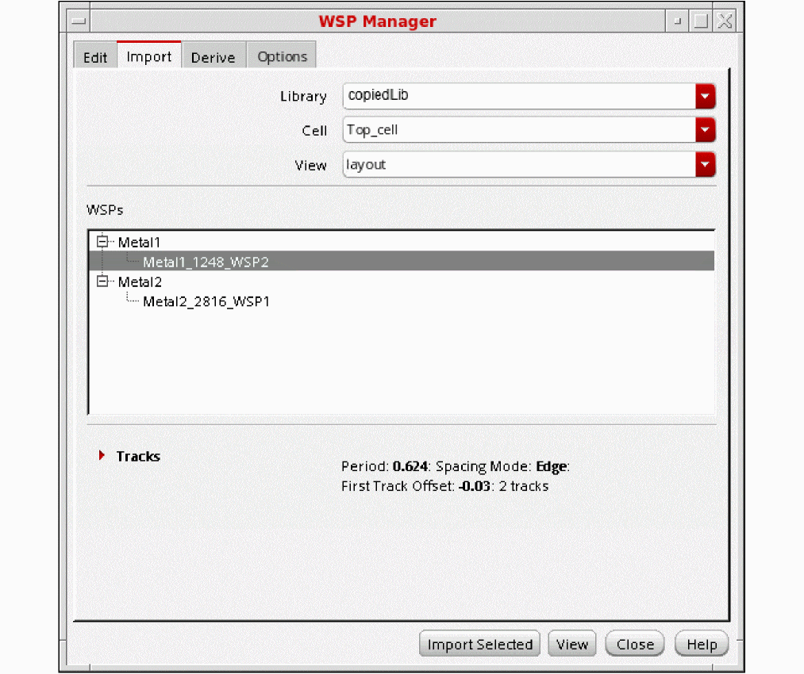

Importing WSPs from Another Design
In the Import page of WSP Manager, you specify a cellview from which to import WSPs. Only design WSPs can be imported from another design, not technology library WSPs. Regions are not copied from the other design. You cannot import a design to itself.

-
Choose the Library, Cell, and View names from the respective drop-down list boxes.
The WSPs section shows the width spacing patterns, grouped by layer, from the design database. -
(Optional) Choose a pattern in the WSPs section to show the track details in the Tracks table.
- Click Import Selected to import the width spacing patterns that are selected in the WSPs section to the current design. This button is active only when at least one pattern is selected in the WSPs section.
After you select the Import All or Import Selected option, if the design has existing WSPs with the same name as those that are being imported, you are prompted with a dialog box where you can choose to overwrite these WSPs during import.
For a video overview of this feature, see WSP Manager: Importing WSPs from Another Cellview on Cadence Online Support.
Return to top